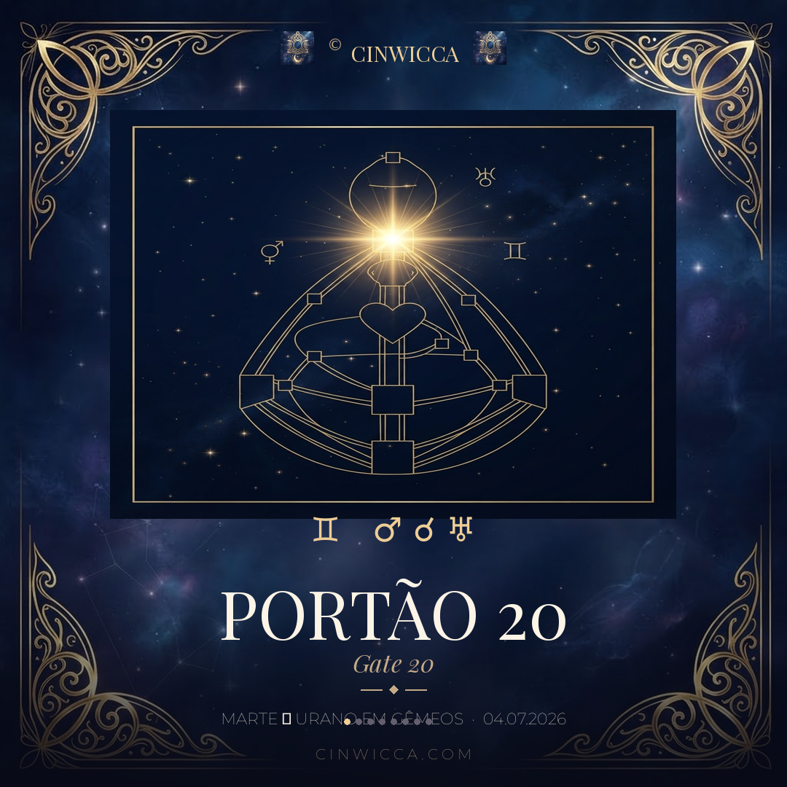

Portão 20 · A Voz do Agora
Marte ☌ Urano em Gêmeos

Marte (♂) — a força da vontade, da ação e do instinto — encontra Urano (♅) — o despertar, a disrupção, o relâmpago da consciência — no signo de Gêmeos (♊), o território da linguagem, da comunicação, das ideias e da conexão.
É elétrico.
A mente acelera. As conversas mudam de direção. Verdades irrompem. Tecnologias avançam. Os sistemas de comunicação se reorganizam. O que parecia estável pode mudar num instante.
Quando Marte encontra Urano, o inesperado deixa de ser exceção — e se torna a própria linguagem.
Desta vez, porém, há uma camada ainda mais profunda.
A Voz do Agora
No Desenho Humano, esta conjunção acontece no Portão 20, o Portão do Agora, localizado no Centro da Garganta.
É a voz que não fala de ontem nem de amanhã. Ela simplesmente declara:
Correspondências simbólicas:
- I Ching — Hexagrama 20 · Contemplação (觀)
- Gene Keys — Sombra → Superficialidade · Dom → Presença · Siddhi → Atestação
Não se trata apenas de falar.
Trata-se de tornar-se Presença através da própria voz.
A Cruz da Fênix Adormecida
O Portão 20 é um dos quatro portões da Cruz da Fênix Adormecida:
Segundo o Desenho Humano, esta Cruz torna-se o tema evolutivo central do ciclo que se abre em 2027. Ao ativar o Portão 20, Marte e Urano iluminam um de seus quatro pilares.
anunciando a chegada de uma nova estação.
Três Canais
Dependendo do teu Desenho Humano, esta ativação pode completar três canais significativos:
- 20–57 · O Canal da Onda CerebralA intuição encontra a sua voz. O corpo sabe antes da mente.
- 20–34 · O Canal do CarismaA ação emerge diretamente do momento presente. Sem força. Sem ensaio.
- 20–10 · O Canal do DespertarO comportamento torna-se a expressão autêntica do Ser.
Se esses canais já estão definidos no teu mapa, este trânsito amplifica o que já está presente.
Se não estão definidos, ele oferece uma experiência temporária dessas frequências.
Se carregas um desses portões pendurado, o trânsito pode completar temporariamente o canal inteiro.
Gêmeos 4°
despertam velhas memórias."
Nota-chave: RITUALIZAÇÃO
O azevinho era sagrado para Saturno. O visco era sagrado para os Druidas — colhido do carvalho com uma foice de ouro e distribuído entre o povo como proteção contra o relâmpago, a doença e o infortúnio.
O símbolo nos lembra que alguns despertares não são novos.
São antigos. São memórias da Alma retornando à consciência.
Como expressa lindamente a interpretação simbólica:
"Eu Sou."
Segundo a interpretação clássica de Dane Rudhyar, a nota essencial de Gêmeos 4° é o retorno à fonte primordial — o anseio por um estado de consciência que existe antes que o intelecto e o ego assumam o controle.
A própria frequência do Portão 20: "Eu Sou. Agora."
1943 · 1944
A última conjunção Marte–Urano neste mesmo Portão aconteceu entre dezembro de 1943 e janeiro de 1944.
O mundo atravessava uma das maiores transições da história moderna.
Outra nascia.
Outras conjunções significativas daquele ciclo:
- Set 1943→ Portão 16
- Dez 1943 · Jan 1944→ Portão 20
- Ago 1945→ Portão 35 (o capítulo final da Segunda Guerra Mundial)
- Ago 1947→ Portão 12 (a invenção do transistor e a abertura de uma nova era tecnológica)
Mais do que sugerir causalidade, esses momentos ressoam simbolicamente com os temas arquetípicos de cada ativação.
O mesmo Portão. A mesma Garganta.
O mesmo convite à Presença.
Naquela época, o que há muito permanecia em silêncio finalmente encontrou a sua voz.
E talvez, mais importante —
pronto para ser dito?
Esta é uma leitura de trânsito — do céu que todas atravessamos. O modo como ela toca o teu desenho é único. Se quiseres compreender o que este relâmpago ilumina no teu próprio mapa, é aqui que o trabalho começa.
Conhecer as sessõesGate 20 · The Voice of the Now
Mars ☌ Uranus in Gemini
Mars (♂) — the force of will, action, and instinct — meets Uranus (♅) — awakening, disruption, and the lightning bolt of consciousness — in the sign of Gemini (♊), the realm of language, communication, ideas, and connection.
It is electric.
The mind accelerates. Conversations change direction. Truths erupt. Technologies advance. Systems of communication reorganize themselves. What once seemed stable can shift in an instant.
When Mars meets Uranus, the unexpected ceases to be the exception — and becomes the language itself.
This time, however, there is an even deeper layer.
The Voice of the Now
In Human Design, this conjunction occurs in Gate 20, the Gate of the Now, located in the Throat Center.
It is the voice that speaks neither of yesterday nor tomorrow. It simply declares:
Symbolic correspondences:
- I Ching — Hexagram 20 · Contemplation (觀)
- Gene Keys — Shadow → Superficiality · Gift → Presence · Siddhi → Attestation
This is not merely about speaking.
It is about becoming Presence through one's own voice.
The Sleeping Phoenix Cross
Gate 20 is one of the four gates of the Sleeping Phoenix Cross:
According to Human Design, this Cross becomes the defining evolutionary theme as we move into the cycle beginning in 2027. By activating Gate 20, Mars and Uranus illuminate one of its four pillars.
announcing the arrival of a new season.
Three Channels
Depending on your Human Design, this activation may complete three significant channels:
- 20–57 · The Brainwave ChannelIntuition finds its voice. The body knows before the mind.
- 20–34 · The Channel of CharismaAction emerges directly from the present moment. Without force. Without rehearsal.
- 20–10 · The Channel of AwakeningBehaviour becomes the authentic expression of the Self.
If these channels are already defined in your chart, this transit amplifies what is already present.
If they are undefined, it offers a temporary experience of these frequencies.
If you carry one of these as a hanging gate, the transit may temporarily complete the entire channel.
Gemini 4°
reawaken old memories."
Keynote: RITUALIZATION
Holly was sacred to Saturn. Mistletoe was sacred to the Druids — harvested from the oak with a golden sickle and distributed among the people as protection against lightning, disease, and misfortune.
The symbol reminds us that some awakenings are not new.
They are ancient. They are memories of the Soul returning to consciousness.
As the symbolic interpretation beautifully expresses:
"I Am."
According to Dane Rudhyar's classical interpretation, the essential keynote of Gemini 4° is a return to the primordial source — the longing for a state of consciousness that exists before the intellect and the ego assume control.
The very frequency of Gate 20: "I Am. Now."
1943 · 1944
The last Mars–Uranus conjunction in this same Gate occurred between December 1943 and January 1944.
The world was passing through one of the greatest transitions in modern history.
Another was being born.
Other significant conjunctions during that cycle:
- Sep 1943→ Gate 16
- Dec 1943 · Jan 1944→ Gate 20
- Aug 1945→ Gate 35 (the closing chapter of World War II)
- Aug 1947→ Gate 12 (the invention of the transistor and the opening of a new technological era)
Rather than suggesting causation, these moments resonate symbolically with the archetypal themes carried by each activation.
The same Gate. The same Throat.
The same invitation to Presence.
Then, what had long remained silent finally found its voice.
And perhaps, more importantly —
ready to be spoken?
This is a transit reading — of the sky we all pass through. How it touches your design is unique to you. If you wish to understand what this lightning illuminates in your own chart, this is where the work begins.
Explore the offeringsPuerta 20 · La Voz del Ahora
Marte ☌ Urano en Géminis
Marte (♂) — la fuerza de la voluntad, la acción y el instinto — se encuentra con Urano (♅) — el despertar, la disrupción, el relámpago de la conciencia — en el signo de Géminis (♊), el territorio del lenguaje, la comunicación, las ideas y la conexión.
Es eléctrico.
La mente se acelera. Las conversaciones cambian de dirección. Las verdades irrumpen. Las tecnologías avanzan. Los sistemas de comunicación se reorganizan. Lo que parecía estable puede cambiar en un instante.
Cuando Marte se encuentra con Urano, lo inesperado deja de ser la excepción — y se convierte en el lenguaje mismo.
Esta vez, sin embargo, hay una capa aún más profunda.
La Voz del Ahora
En Diseño Humano, esta conjunción ocurre en la Puerta 20, la Puerta del Ahora, ubicada en el Centro de la Garganta.
Es la voz que no habla ni de ayer ni de mañana. Simplemente declara:
Correspondencias simbólicas:
- I Ching — Hexagrama 20 · Contemplación (觀)
- Gene Keys — Sombra → Superficialidad · Don → Presencia · Siddhi → Atestación
No se trata solo de hablar.
Se trata de convertirse en Presencia a través de la propia voz.
La Cruz del Fénix Dormido
La Puerta 20 es una de las cuatro puertas de la Cruz del Fénix Dormido:
Según el Diseño Humano, esta Cruz se convierte en el tema evolutivo central del ciclo que se abre en 2027. Al activar la Puerta 20, Marte y Urano iluminan uno de sus cuatro pilares.
que anuncia la llegada de una nueva estación.
Tres Canales
Según tu Diseño Humano, esta activación puede completar tres canales significativos:
- 20–57 · El Canal de la Onda CerebralLa intuición encuentra su voz. El cuerpo sabe antes que la mente.
- 20–34 · El Canal del CarismaLa acción emerge directamente del momento presente. Sin fuerza. Sin ensayo.
- 20–10 · El Canal del DespertarEl comportamiento se convierte en la expresión auténtica del Ser.
Si estos canales ya están definidos en tu carta, este tránsito amplifica lo que ya está presente.
Si no están definidos, ofrece una experiencia temporal de estas frecuencias.
Si llevas una de estas puertas colgante, el tránsito puede completar temporalmente el canal entero.
Géminis 4°
despiertan viejos recuerdos."
Nota clave: RITUALIZACIÓN
El acebo era sagrado para Saturno. El muérdago era sagrado para los Druidas — recogido del roble con una hoz de oro y distribuido entre el pueblo como protección contra el rayo, la enfermedad y el infortunio.
El símbolo nos recuerda que algunos despertares no son nuevos.
Son antiguos. Son memorias del Alma que regresan a la conciencia.
Como expresa bellamente la interpretación simbólica:
"Yo Soy."
Según la interpretación clásica de Dane Rudhyar, la nota esencial de Géminis 4° es el retorno a la fuente primordial — el anhelo de un estado de conciencia que existe antes de que el intelecto y el ego asuman el control.
La frecuencia misma de la Puerta 20: "Yo Soy. Ahora."
1943 · 1944
La última conjunción Marte–Urano en esta misma Puerta ocurrió entre diciembre de 1943 y enero de 1944.
El mundo atravesaba una de las mayores transiciones de la historia moderna.
Otra nacía.
Otras conjunciones significativas de aquel ciclo:
- Sep 1943→ Puerta 16
- Dic 1943 · Ene 1944→ Puerta 20
- Ago 1945→ Puerta 35 (el capítulo final de la Segunda Guerra Mundial)
- Ago 1947→ Puerta 12 (la invención del transistor y la apertura de una nueva era tecnológica)
Más que sugerir causalidad, estos momentos resuenan simbólicamente con los temas arquetípicos de cada activación.
La misma Puerta. La misma Garganta.
La misma invitación a la Presencia.
Entonces, lo que durante tanto tiempo permaneció en silencio finalmente encontró su voz.
Y quizás, más importante —
listo para ser dicho?
Esta es una lectura de tránsito — del cielo que todas atravesamos. La forma en que toca tu diseño es única. Si deseas comprender qué ilumina este relámpago en tu propia carta, aquí es donde comienza el trabajo.
Ver las sesiones